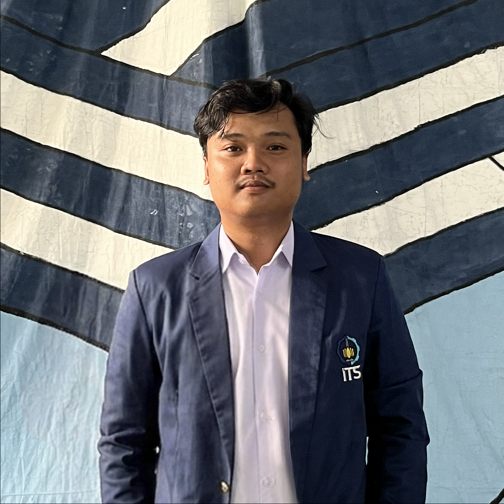

Portofolio

3D Pucang Sewu Bozem Prject in Pacitan

3D NUFReP Kedurus River in Surabaya

GERIGI ITS 2024 Main Gate Design
Sugeng Rawuh, this is my personal space. Check out my CV and portfolio below.

📞 08585191299 | ✉️ briansyaffiro@gmail.com | linkedin.com/brianabelsyaffiro
📍 Surabaya, Indonesia
Final year student at the Department of Civil Infrastructure Engineering ITS focusing on water resources engineering. Actively involved in various campus organizations and committees. Passionate about graphic design and 3D modeling.
Involved in 3D modeling for the Kedurus River flood control project in Surabaya. Working within the supervision team to model both the construction progress and the final project deliverables.
Developed 3D models for the Pucang Sewu Bozem Project in Pacitan. Created 3D design visualizations from technical drawings and designed supporting facilities for the bozem area.
Supervised construction works for weirs and irrigation channels. Conducted hydrological and hydraulic analyses to determine the annual cropping intensity percentage within the Asin Bawah irrigation area.
Applied Bachelor Degree (Civil Infrastructure Engineering - Institut Teknologi Sepuluh Nopember)
Vocational High School (SMK Negeri 1 Kota Kediri)
3D Pucang Sewu Bozem Prject in Pacitan
3D NUFReP Kedurus River in Surabaya
GERIGI ITS 2024 Main Gate Design